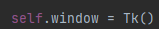

Tkinter
To start of, create a window by creating an object Tk() to window variable. Maintain the window active through a main loop.
The window


Main loop should be at the end of all processes.
We could focibly destroy the window by using destroy() method.

Button
To create a button component, we call to the Button() method, this accets, text, background color, and most specially command.

We can disable the button by tapping into the state attribute.

Every component should be placed inside the window through either the grid system, place system or pack system.

We can also specify the padding inside it,
Image
To create an image, we use this method. First, initialize the photo to be used through PhotoImage method,

Now we can insert it inside a canvas or a button.
Canvas
To create a canvas, we just call into it and place it among the grid, every component inside the canvas is overlayed on top of one another.

Modifying components of a canvas, we could use itemconfig method accepting 2 parameters whcih is the target variable and the attribtues to be changed.

To Modify all things in a canvas, we use config or configure...

Instead of using time module, tkinter has a way to delay things or a process. In here, we use the after() method.